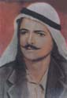

| Introduction |
| The Massacre |
| Northern Fields |
| Inside the Village |
| First Wave |
| Second Wave |
| Third Wave |
| Fourth Wave |
| Sixth |
| Seventh |
| Ninth |
| Roster of Victims |
| Witnesses |
| Artist's Notes |
| Contact me |
| Exit |
MEMORIAL on the 50th Anniversary of the Kafr Qasem Massacre

“Roster of victims"
The number of those killed (martyred) was 49 men, women and children, and one unborn fetus 9 months of age. Some died on the following days. The number of wounded and those made physically and mentally disabled remains to be documented. The 49 victims who died immediately are listed below in the believed order of their death.
Those who Died in the Northern Fields
 Ibrahim Abdalhadi Himad Isaa, 35 years of age.
Ibrahim Abdalhadi Himad Isaa, 35 years of age.
 Abed Muhammad Abdalhadi Isaa, 9 years of age.
Abed Muhammad Abdalhadi Isaa, 9 years of age.
 Abdallah Ahmad Himad Isaa, 15 years of age.
Abdallah Ahmad Himad Isaa, 15 years of age.
Those who Died Inside the Village
 Talal Shaker Abdallah Isaa, 8 years old, and his grandfather Abdallah.
Talal Shaker Abdallah Isaa, 8 years old, and his grandfather Abdallah.
 Abdallah Sliman Isaa, 90 years old.
Abdallah Sliman Isaa, 90 years old.
Those who Died in the First Wave of Killing on the Western Road

Ahmad Muhammad Sous Freij, 35 years old, left a wife and four children.
 Ali Uthman Ali Tah, 30 years old, left a wife and eight children.
Ali Uthman Ali Tah, 30 years old, left a wife and eight children.
Those who Died in the Second Wave on the Western Side
 Muhammad Abed Samaha Asi, AKA Abu Samaha, 50 years of age, and his son.
Muhammad Abed Samaha Asi, AKA Abu Samaha, 50 years of age, and his son.
 Ghazi Mahmoud Darweesh Isaa, 20 years old.
Ghazi Mahmoud Darweesh Isaa, 20 years old.
 Muhammad Abdalraheem Isaa, 50 years of age.
Muhammad Abdalraheem Isaa, 50 years of age.
Those who Died in the Third Wave on the Western Side
 Fathi Uthman Abed Isaa, 12 years old, and his father Uthman.
Fathi Uthman Abed Isaa, 12 years old, and his father Uthman.
 Uthman Abed Himad Isaa, 30 years old.
Uthman Abed Himad Isaa, 30 years old.
One who Died in The Fourth Wave of on the Western Side
 Saleh Mahmoud Naser Amer
Saleh Mahmoud Naser Amer
One who Died in The Fifth Wave on the Western Side
 Mahmoud Abdalghafer Rayan, 35 years old.
Mahmoud Abdalghafer Rayan, 35 years old.
Those who Died in the Sixth Wave on the Western Side
 Mahmoud Abdalrazeq Sarsour, 16 years old.
Mahmoud Abdalrazeq Sarsour, 16 years old.
 Ali Nimer Nuwwara Freij, 17 years old.
Ali Nimer Nuwwara Freij, 17 years old.
 Saleh Salameh Ahmad Amer, 40 years old, left a wife and three children.
Saleh Salameh Ahmad Amer, 40 years old, left a wife and three children.
 Salim Ahmad Basheer Budeir, 50 years old, left a wife and a son.
Salim Ahmad Basheer Budeir, 50 years old, left a wife and a son.
 Abdallah Abdalghafer Budeir.
Abdallah Abdalghafer Budeir.
 Abed Salim Saleh Isaa.
Abed Salim Saleh Isaa.
Those who Died in the Seventh Wave on the Western Side
 Atta Yacoub Abed Sarsour, 26 years old.
Atta Yacoub Abed Sarsour, 26 years old.
 Riyad Raja Hamdan Dahoud, 8 years old.
Riyad Raja Hamdan Dahoud, 8 years old.
 Jamal Salim Muhammad Tah, 11 years old.
Jamal Salim Muhammad Tah, 11 years old.
 Jumma Muhammad Abed Sarsour, 17 years old.
Jumma Muhammad Abed Sarsour, 17 years old.
 Mousa Thiab Abed Freij, 18 years old.
Mousa Thiab Abed Freij, 18 years old.
 Abdalkarim Salim Nuwwara Freij, 14 years old.
Abdalkarim Salim Nuwwara Freij, 14 years old.
 Saleh Mustafa Ahmad Isaa, 17 years old.
Saleh Mustafa Ahmad Isaa, 17 years old.
 Abdalraheem Ismir Budeir, 25 years old.
Abdalraheem Ismir Budeir, 25 years old.
 Ahmad Muhammad Jouda Amer, 17 years old.
Ahmad Muhammad Jouda Amer, 17 years old.
 Jumma Tawfik Ahmad Isaa, 16 years old.
Jumma Tawfik Ahmad Isaa, 16 years old.
Those who Died in the Eigth Wave on the Western Side
 Mahmoud Khader Jaber Sarsour, 27 years old.
Mahmoud Khader Jaber Sarsour, 27 years old.
 Yousef Muhammad Ismail Sarsour, 52 years of age
Yousef Muhammad Ismail Sarsour, 52 years of age
Those who Died in the Ninth Wave on the Western Side
 Muhammad Salim Khader Sarsour, 15 years old.
Muhammad Salim Khader Sarsour, 15 years old.
 Muhammad Ali Thiab Sarsour, 35 years old leaves a wife and six children.
Muhammad Ali Thiab Sarsour, 35 years old leaves a wife and six children.
 Abdallah Muhammad Abed Sarsour, 14 years old, he was with his mother Safa.
Muhammad Usus Sarsour who also died during this wave after she had seen the body of
her other son on the road.
Abdallah Muhammad Abed Sarsour, 14 years old, he was with his mother Safa.
Muhammad Usus Sarsour who also died during this wave after she had seen the body of
her other son on the road.
 Safa Abdallah Usus Sarsour, 45 years old, her two sons were killed in the massacre as
mentioned above.
Safa Abdallah Usus Sarsour, 45 years old, her two sons were killed in the massacre as
mentioned above.
 Amne Qasem Tah, 50 years old.
Amne Qasem Tah, 50 years old.
 Khamise Faraj Muhammad Amer, 50 years old.
Khamise Faraj Muhammad Amer, 50 years old.
 Zaghlouleh Ahmad Basheer Isaa, 45 years old.
Zaghlouleh Ahmad Basheer Isaa, 45 years old.
 Hilwe Muhammad Odeh Budeir, 65 years old.
Hilwe Muhammad Odeh Budeir, 65 years old.
 Fatme Dahoud Sarsour, 30 years old, she was in her ninth month of pregnancy and
had gone to work because her husband was sick.
Fatme Dahoud Sarsour, 30 years old, she was in her ninth month of pregnancy and
had gone to work because her husband was sick.
 Fetus of Fatme Dahoud Sarsour in his 9th month.
Fetus of Fatme Dahoud Sarsour in his 9th month.
 Fatme Mustafa Khamran Isaa, 18 years old.
Fatme Mustafa Khamran Isaa, 18 years old.
 Fatme Mahmoud Budeir.
Fatme Mahmoud Budeir.
 Fatme Saleh Ahmad Sarsour, 14 years old.
Fatme Saleh Ahmad Sarsour, 14 years old.
 Rashika Faek Ibrahim Budeir, 14 years old.
Rashika Faek Ibrahim Budeir, 14 years old.
 Zeinab Abdalrahman Ahmad Tah, 45 years old.
Zeinab Abdalrahman Ahmad Tah, 45 years old.
 Latife Dahoud Khamran Isaa, 12 years old.
Latife Dahoud Khamran Isaa, 12 years old.
 Bakriya Mahmoud Ismail Tah, 14 years old.
Bakriya Mahmoud Ismail Tah, 14 years old.
 Mahmoud Muhammad Habib Masarwa, 25 years old.
Mahmoud Muhammad Habib Masarwa, 25 years old.
Web posting: Samia A. Halaby,October 2006.
![[Art on the Net]](/images/artnet_button.gif)